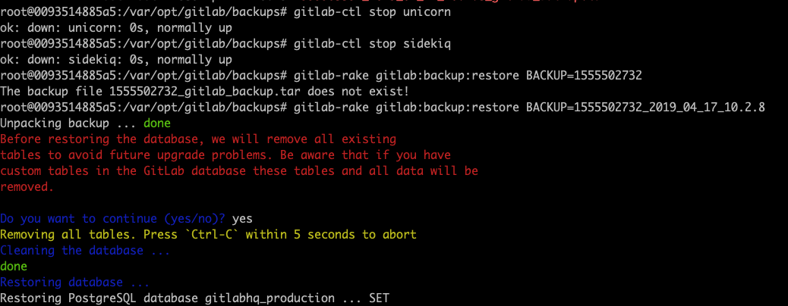
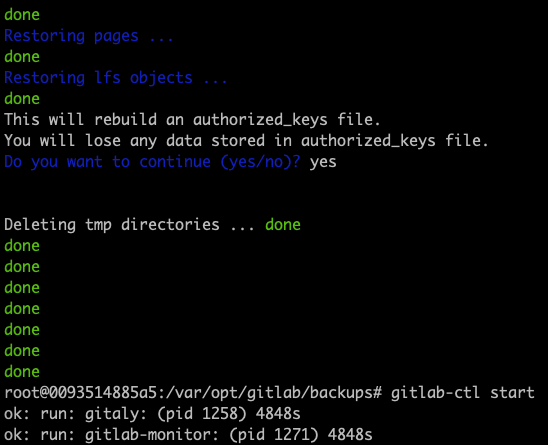

Gitlab版本管理
参考
安装（基于docker）
以10.2.8版本为例，docker-compose.yml文件如下：
version: '2'
services:
gitlab:
container_name: gitlab
image: twang2218/gitlab-ce-zh:10.2.8
# 服务硬件需求，500人以下：2Core，6G内存，100G硬盘
cpu_quota: 200000
mem_limit: 4G
restart: unless-stopped
# hostname: 'gitlab.example.com'
environment:
TZ: 'Asia/Shanghai'
GITLAB_OMNIBUS_CONFIG: |
gitlab_rails['time_zone'] = 'Asia/Shanghai'
# external_url 'http://gitlab.example.com'
# 需要配置到 gitlab.rb 中的配置可以在这里配置，每个配置一行，注意缩进。
# 比如下面的电子邮件的配置：
# gitlab_rails['smtp_enable'] = true
# gitlab_rails['smtp_address'] = "smtp.exmail.qq.com"
# gitlab_rails['smtp_port'] = 465
# gitlab_rails['smtp_user_name'] = "xxxx@xx.com"
# gitlab_rails['smtp_password'] = "password"
# gitlab_rails['smtp_authentication'] = "login"
# gitlab_rails['smtp_enable_starttls_auto'] = true
# gitlab_rails['smtp_tls'] = true
# gitlab_rails['gitlab_email_from'] = 'xxxx@xx.com'
ports:
- '22:22'
- '80:80'
- '443:443'
volumes:
# 提前在大磁盘/data下建立相关目录：/data/gitlab
- /data/gitlab/etc/gitlab:/etc/gitlab
- /data/gitlab/log/gitlab:/var/log/gitlab
- /data/gitlab/opt/gitlab:/var/opt/gitlab
# extra_hosts:
# - "gitlab.example.com:0.0.0.0"
docker-compose up -d启动- 第一启动时，重置root密码
docker-compose down停止服务
集成ldap认证
配置mail服务
备份和恢复
官方版：
# 备份，在docker中执行
gitlab-rake gitlab:backup:create
# 在/var/opt/gitlab/backups中生成类似：1555502732_2019_04_17_10.2.8_gitlab_backup.tar

# 从备份中恢复，先停止服务
gitlab-ctl stop unicorn
gitlab-ctl stop sidekiq
# 从指定编号备份中恢复
gitlab-rake gitlab:backup:restore BACKUP=1555502732_2019_04_17_10.2.8
# 重启服务
gitlab-ctl start
 
暴力版：
# 停docker，备份，直接把data打包，生成类似：gitback-2019-04-18.tar.gz
tar -zcvf /backup/data/gitback-${DATE}.tar.gz -C /data/
# 恢复，再重启docker
tar -xf gitback-2019-04-18.tar.gz -C /data/
docker-compose up -d